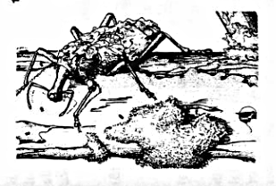
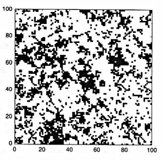
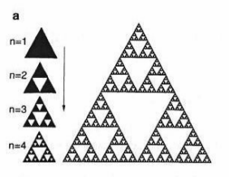
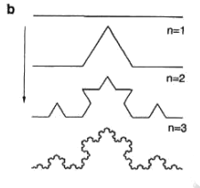
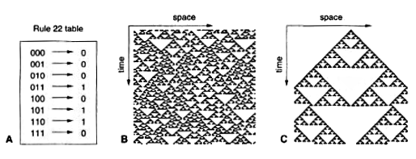
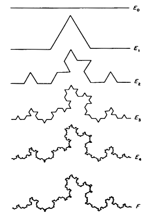
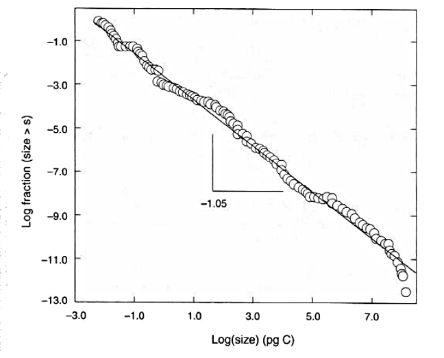
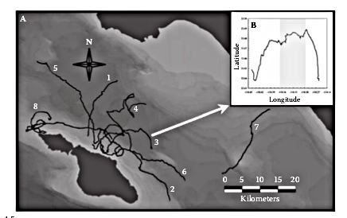
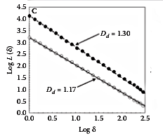

Basic Theory - Day 1
Introduction to fractals and multifractals
-
What are fractals?
-
Highly irregular : fractal objects tend to be highly irregular and fill the space in which it is embedded.
-
Self-similarity : an object that displays the same basic pattern at all scales. The simplest fractals are deterministic, and are generated using recursive or iterative procedures.
-
Fractal Dimension : the characteristic are captured by a dimension that is a measure of complexity of the object.
-
Ecological fractals
-
Fractal behavior can be observed looking at different scales. In the next figure (modified from Solé & Bascompte 2006) a beetle species walks on the surface of a trunk with lichens carrying lichens on its back.

The spatial distribution of low canopy areas (less than 15m) in a rainforest in Panama (BCI) where clusters of many different sizes can be observed

Deterministic fractals
-
The Sierpinsky gasket : Starting with an equilateral triangle, the procedure consist on removing from the central portion an upside down equilateral triangle with half the side length of the starting triangle.

Deterministic fractals 1
-
The Coch curve: A segment of length 1 is divided into thirds. The center one is replaced by the other two sides of an equilateral triangle of length 1/3.

The curve occupies a definite space, but its length $L$ goes to infinity.
We can compute $L_n$ at different steps $n$
$L_0=1$
$L_1=4/3$
$L_2=(4/3)^2$
At an arbitrary step $L_n=(4/3)^n$ that goes to infinity as $n$ grows.
-
Why $L_n=(4/3)^n$ ?
Dynamic fractals
-
Cellular automata (CA) are discrete time, discrete space and discrete state dynamical models. We will consider a one dimensional CA with N sites. We can think that each site contains one individual of one species $S_i(t)$ for $i=1,…,N$
-
Each time step all elements are updated following a rule table:
$S_i(t+1) = \Phi \left( S_{i-1}(t),S_{i}(t),S_{i+1}(t) \right)$
The state of each unit change according to its own state and the state of some neighborhood.
-
The simplest case is that we have only one species: the possible states are 0 and 1.

Exercise: play with 1D CA
-
Rule 22 (monogamy)
current pattern 111 110 101 100 011 010 001 000 ----------------- ----- ----- ----- ----- ----- ----- ----- ----- new state 0 1 1 0 1 0 0 0Starting with the following initial configurations
a) 1 0 1 0 1 0 1 0 1 0 b) 0 1 1 0 1 0 1 1 0 0 -
But the rule 22 does not generate the Sierpinsky triangle, the following rule generates it:
current pattern 111 110 101 100 011 010 001 000 ----------------- ----- ----- ----- ----- ----- ----- ----- ----- new state 0 1 0 1 1 0 1 0Starting with the following initial configurations
a) 0 0 0 0 1 0 0 0 0 0
Random Fractals
-
All the previous fractals constructions have random analogues. In the Von Koch curve we replace the middle third by the sides of an equilateral triangle, we might toss a coin to determine the position of the new part above or below the removed segment.

Statistical self similarity
-
The pattern of random fractals is self-similar in the statistical sense.
-
A given property $L(r)$, which can be length, mass, population abundance or number or species, measured at some scale of resolution $r$.
-
Then we look at a different scale $r'=\alpha r$. If $\alpha < 1$ then is a finer resolution, else a coarser resolution.
-
Statistical self similarity means that $L(r)$ is proportional to $L(\alpha r)$
$L(\alpha r) = k L(r)$
where k is a constant.
-
This definition implies that the statistical features of a fractal set are the same when measured at different scales.
-
Scaling laws
-
Statistical self similar patterns can be analyzed by power laws or scaling laws
-
Zipf’s law : one of the best known scaling laws
The fraction of cities $N(n)$ with $n$ inhabitants shows a power law dependence:
$N(n) \propto n^{-r}$ with $r \approx 2$
-
An example of an ecological scaling law is the frequency distribution of biomass, the plot shows the cumulative distribution $N(>n)$ against biomass

Scaling in the cumulative biomass distribution of all organisms in lake Konstanz (from Gaedke 1992).
For a scaling law $N(n) \propto n^{-r}$ we get $N(>n) \propto n^{-r+1}$
-
Power laws are scale invariant
-
To show that power laws are scale invariant we can see the effect of a scale transformation.
Self similarity implies:
$\frac{L(r)}{L(\alpha r)}=k$
Let us assume that $L(r)$ follows a power law
$L(r)=A r^\eta$
then
$\frac{A r^\eta}{A (\alpha r)^\eta} = \frac{1}{\alpha^\eta} = k $
Fractal dimension
-
Let us consider different geometric objects:
-
A line $\Omega_1$ of length $L$
-
A square $\Omega_2$ of area $L^2$
-
A cube $\Omega_3$ with volume $L^3$
-
-
We want to cover these with a set of identical non-overlaping segments/squares/cubes of side $\epsilon L$ with $\epsilon < 1$.
The number of segments required to cover $\Omega_1$ will be
$N(\epsilon) = \frac{L}{\epsilon L} =\epsilon^{-1}$
For the squares $\frac{L^2}{(\epsilon L)^2} =\epsilon^{-2}$
In general
$N(\epsilon) = \epsilon^{-d}$
Where $d=dim(\Omega_d)$
Fractal dimension 1
-
Thus we can define a dimension taking logarithms
$$d = -\lim_{\epsilon \to 0}\frac{\log N(\epsilon)}{\log \epsilon}$$
-
Why we need the limits?
-
We can apply it to the Sierpinsky gasket:
-
For the first step we need 1 triangle of side $\epsilon_0=1$
-
For the second step we need $N_1(\epsilon)=3$ of side $\epsilon_1=1/2$
-
In general $N_n(\epsilon)=3^n$ triangles of side $\epsilon_n=(1/2)^n$
-
The fractal dimension
$$d = -\lim_{n\to \infty}\frac{\log 3^n}{\log (1/2)^n}=\frac{log 3}{log(1/2)}=1.5849$$
-
This is a non-integrer value between a line dim=1 and a surface dim=2. In general fractal objects have a dimension below of the dimension of the space that contains it.
-
-
Exercise: what is the dimension of the Koch Curve
- $-\frac{log 4}{log(1/3)}$
Estimation of fractal dimension
-
How to compute fractal dimensions for natural objects that display statistical self similarity?
-
The box counting algorithm
-
We cover the object with square non-overlaping boxes of size $\epsilon^2$ and repeat the procedure using a range of $\epsilon$ values
-
This range will be limited by the resolution scale $\epsilon_m$ the pixels of our system, and the system size $\epsilon_M$
-
For each $\epsilon$ in our range the number of boxes $N_b(\epsilon)$ containing at least one part of the object will be counted
-
Following the definition of dimension we can see that $N_b$ will approximately scale as
$N_b(\epsilon) \thicksim \epsilon^{-d}$
in practice $d$ is estimated by the slope of the scaling relation
$-\log(N_b(\epsilon))/\log(\epsilon)$
-
An ecological example
-
The fine scale movement patterns of the ocean sunfish Mola mola (From Seuront 2009). The inset is the detail of the diurnal and nocturnal (shaded) movements.

Mola mola swimming
-
The fractal dimension was calculated for diurnal and nocturnal movement paths and they were different.

-
lower D during daylight suggest individuals move in more directed manner.
-
Higher D In the night the movements were more complex suggesting individual interact with environmental heterogeneity on a finer scale.
-
An increase in the complexity of spatial movements should indicate an increase in foraging or searching effort.
Characteristic features of fractals
-
Mandelbrot Originally defined fractals as sets that have fractal dimension strictly greater than its topological dimension.
-
There is no hard and fast definition but a list of properties.
-
We refer to F as fractal if:
-
F has a fine structure: i.e. detail on small scales.
-
F is too irregular to be described by traditional geometrical language
-
F has some form of self-similarity, perhaps approximate or statistical
-
Usually the fractal dimension of F is greater than its topological dimension
-
Paper to read
- Sugihara G, May RM (1990) Applications of fractals in ecology. Trends in Ecology & Evolution 5: 79–86.
Bibliography
-
Gaedke U (1992) The size distribution of plankton biomass in a large lake and its seasonal variability. Limnology and Oceanography 37: 1202–1220.
-
Seuront L (2009) Fractals and Multifractals in Ecology and Aquatic Sciences. Taylor & Francis.
Leonardo A. Saravia
Professor/Researcher
Docente/Investigador de la UNGS, Investigador Independiente CADIC - CONICET, Doctor en Biología de la UBA. Complex systems. Networks. Global Forest Fragmentation. Open science. R C++ & Python.